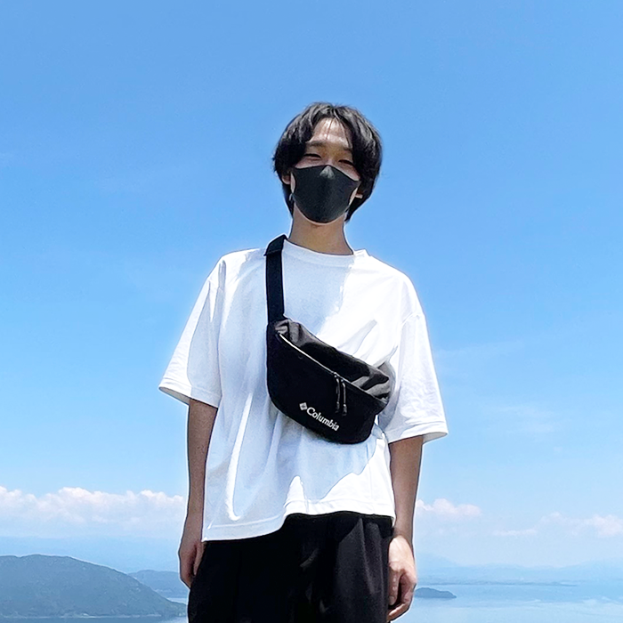
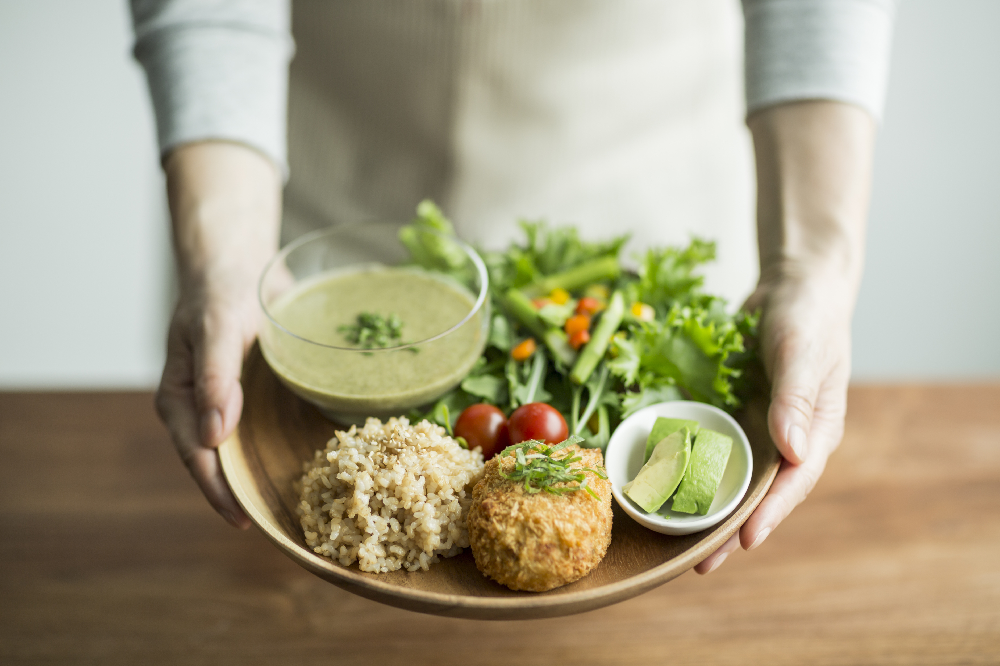

About
私について

驚きと感動を。
誰かの背中を押せるようなそんなデザインを作っていきたい
SHUNSUKE NAKAGAWA
中川 峻輔
25歳 京都府出身 大阪府在住
SAPエンジニアとして、客先常駐で就業していました。
2021年の秋頃からデザインやプログラムの勉強を始め、模写やアプリ制作など絶賛勉強中の毎日です。
「開発者は一消費者であること」を心掛け、誰が見ても使いやすいモノの制作を目標としています。
コミュニケーション能力と論理的思考を活かし、持ち前の好奇心と行動力で常に挑戦し続けます。
favorite
私の好きなもの
-

料理をすること
毎日必ず料理をします。幼少期からお手伝いという形でしていましたが、一人暮らしをきっかけに本格的に始めました。得意料理は豚の角煮です。
-

ライブに行くこと
現在はコロナ禍ということもあり、あまり行けていませんが以前はよく行っていました。邦ロックをよく聴きます。
-

映画を見ること
ミッションインポッシブルが好きで全作見ました。好きな登場人物はジェレミー・レナー演じるウィリアム・ブラントで憧れの存在です。